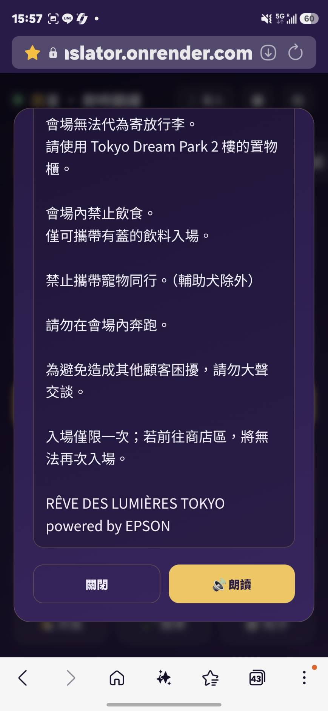

到上一章為止，你的 App 已經會：打字翻譯、用說的翻譯（語音辨識）。
可是翻譯結果現在只會「顯示在畫面上」，還不會「念出來」。出國問路、點餐時，你得把手機拿給對方看字——很不方便。
翻譯完，App 用語音把結果念出來。出國問路、點餐時，直接把翻譯播給對方聽。
會「說話」的翻譯 App：翻完自動朗讀，任何語言都有聲音，還能中途按停。
任何語言都有聲音、發音自然，不依賴手機語音包。這是首選。
免費、即時，但要看裝置有沒有裝該語言的語音包。當雲端失敗時的後備。
我們平常聽的 MP3 是「壓縮過、打包好」的音樂檔。Gemini 雲端 TTS 回給我們的是更原始的 PCM——你可以想成「還沒裝進盒子的裸聲音資料」：一長串代表聲音高低起伏的數字（24kHz、16 位元）。
好處是瀏覽器可以直接餵給喇叭播、不用等整段下載解碼，反應快。代價是我們要自己用一點程式把這串數字「送進喇叭」——這段程式其實你在 CH09 即時語音就用過同一個（playLiveAudio），這章直接沿用。
| 檔案 | 加什麼 |
|---|---|
| app.py | # ===== 3. 朗讀 TTS API ===== 區：新增 /api/tts 端點，把文字交給 Gemini 產生語音（含重試） |
| static/js/app.js | // ===== 4. 朗讀 TTS ===== 區：新增 speak()（主朗讀）、browserSpeak()（後備）、stopAllAudio()（停止）、ensureAudioUnlocked()（手機解鎖） |
| static/js/app.js | 翻譯成功後加一行 speak(...)，讓它自動念 |
playLiveAudio() 是 CH09 即時語音就寫好的同一個函式，這章直接沿用。/api/tts，前端把「要念的文字」送進來，後端請 Gemini 產生一段語音，再把語音回傳。📂 打開這個檔案：app.py，找到 # ===== 3. 朗讀 TTS API ===== 這一區，把端點貼在這一區裡。💡 照著區塊名字放就對了，不用想「貼哪」。
💬 對你的 AI 助手這樣說（複製整段貼過去）：
請在 app.py 新增一個 /api/tts 端點（POST）： 從 JSON 收 text（要朗讀的文字），空的就回 204。 用 Gemini 的語音模型 gemini-3.1-flash-tts-preview 把文字變成語音， 指定預建語音 voice_name='Kore'，回應型別設成 AUDIO。 預覽版模型偶爾會回文字而不是聲音，所以要重試最多 3 次； 成功就把語音的 bytes 直接回傳（mimetype 用 application/octet-stream）。
# app.py — 雲端 TTS：用 Gemini 原生語音朗讀「任何語言」 TTS_MODEL = "gemini-3.1-flash-tts-preview" @app.route('/api/tts', methods=['POST']) def api_tts(): from flask import Response data = request.get_json(force=True, silent=True) or {} text = (data.get('text') or '').strip() if not text: return ('', 204) # 沒文字就不用念 key = (data.get('gemini_key') or '').strip() or API_KEY if not key: return jsonify({'error': 'no gemini key'}), 400 from google.genai import types client = genai.Client(api_key=key) cfg = types.GenerateContentConfig( response_modalities=['AUDIO'], # 要「聲音」不要文字 speech_config=types.SpeechConfig( voice_config=types.VoiceConfig( prebuilt_voice_config=types.PrebuiltVoiceConfig(voice_name='Kore')))) last_err = 'unknown' for _attempt in range(3): # 預覽模型偶爾吐文字 → 重試 try: resp = client.models.generate_content(model=TTS_MODEL, contents=text, config=cfg) for part in resp.candidates[0].content.parts: inline = getattr(part, 'inline_data', None) if inline is not None and inline.data: return Response(inline.data, mimetype='application/octet-stream') # 24kHz 16-bit PCM last_err = 'model returned text instead of audio' except Exception as e: last_err = str(e) return jsonify({'error': last_err}), 400
| 這幾行 | 在做什麼 |
|---|---|
TTS_MODEL = "gemini-3.1-flash-tts-preview" | 指定「文字轉語音」的專用模型（跟翻譯用的 3.5-flash 不同） |
if not text: return ('', 204) | 沒文字就回「無內容」，不浪費一次呼叫 |
key = ... or API_KEY | 優先用前端帶來的金鑰，沒帶就用伺服器內建的那把 |
response_modalities=['AUDIO'] | 告訴 Gemini：我要的是聲音，不是文字 |
voice_name='Kore' | 選一個預建的聲音（沉穩款）；換名字就換音色 |
for _attempt in range(3) | 預覽模型偶爾會出包 → 最多重試 3 次，下一張詳說 |
Response(inline.data, ...) | 把 Gemini 給的語音資料原封不動回傳給前端 |
這個 TTS 模型還是「預覽版（preview）」，偶爾會不聽話——你叫它給聲音，它卻回一段文字。這時候程式在語音資料裡找不到 inline_data，就會失敗。
for _attempt in range(3) 裡，最多重試 3 次。多試幾次通常就成功了；三次都不行才回錯誤，讓前端去走瀏覽器後備。model returned text instead of audio → 多半是模型當下不穩，稍等再試；也確認模型名有打對（gemini-3.1-flash-tts-preview）。speak()，先去跟後端 /api/tts 要語音來播；萬一雲端失敗，就退回瀏覽器內建朗讀。📂 打開這個檔案：static/js/app.js，找到 // ===== 4. 朗讀 TTS ===== 這一區，把這幾個函式貼在這一區裡（緊接在第 2 區翻譯的下面）。💡 骨架分區的好處——照著區塊名字放就對了。
💬 對 AI 這樣說：
幫我在 app.js 寫朗讀功能： 1) speak(text, bcp)：先呼叫 /api/tts 拿雲端語音來播； 在開始念之前，先呼叫 stopAllAudio() 把上一句還在播的中斷掉，只念最新這句。 若雲端失敗（沒回音訊），改用瀏覽器的 speechSynthesis 朗讀當後備。 2) browserSpeak(text, bcp)：用 SpeechSynthesisUtterance 念，設定 lang=bcp。 請都加上繁中註解，我是新手。
// ---------- TTS ---------- const synth = window.speechSynthesis; // 瀏覽器內建朗讀（依賴手機語音包）；onEnd 於念完或出錯時回呼 function browserSpeak(text, bcp, onEnd = null) { if (!synth || !text) { onEnd?.(); return; } try { synth.cancel(); const u = new SpeechSynthesisUtterance(text); u.lang = bcp; // 用目標語言念 u.onend = () => onEnd?.(); u.onerror = () => onEnd?.(); synth.speak(u); } catch (e) { onEnd?.(); } } // 主朗讀：優先雲端 Gemini TTS（任何語言都有聲音），失敗才用瀏覽器 async function speak(text, bcp, force = false, onEnd = null) { if ((!cfg.autospeak && !force) || !text) { onEnd?.(); return; } stopAllAudio(); // ★先中斷上一句（下面詳說） try { const res = await fetch('/api/tts', { method: 'POST', headers: { 'Content-Type': 'application/json' }, body: JSON.stringify({ text, gemini_key: cfg.geminikey || '' }) }); if (res.ok) { const buf = await res.arrayBuffer(); if (buf && buf.byteLength > 44) { onAllAudioEnd = onEnd; playLiveAudio(buf); return; } } } catch (e) { console.warn('雲端 TTS 失敗，改用瀏覽器', e); } browserSpeak(text, bcp, onEnd); // 後備 }
| 這幾行 | 在做什麼 |
|---|---|
if (!cfg.autospeak && !force) | 如果「自動朗讀」關著、又不是手動點的，就不念 |
stopAllAudio() | 先中斷上一句——這行是重點，下一張專門講 |
fetch('/api/tts', ...) | 把文字送到步驟一做的那道門，要一段語音回來 |
buf.byteLength > 44 | 確認真的拿到有內容的音訊（太短代表是空的/壞的） |
playLiveAudio(buf) | 把語音播出來（沿用 CH09 的播放函式） |
browserSpeak(text, bcp, onEnd) | 雲端這條路走不通時的後備：改用瀏覽器念 |
bcp 是語言代碼（像 ja-JP、en-US），瀏覽器後備要靠它才知道用哪國語音念。原因：雲端語音是靠一個「排隊時間 nextTime」一段一段接著排播放的。如果新的一句進來時沒把舊的隊伍清掉，它就會排在舊語音「後面」，於是舊的還沒播完的、加上新的，全部接連播出來。
🎯 這一步要做什麼：在 speak() 真正開始念之前，先呼叫 stopAllAudio()，把上一句還在播或還在排隊的語音全部中斷、隊伍歸零，這樣就只會念最新這一句。
📂 位置：就在步驟二 speak() 裡那行 stopAllAudio();（已經幫你放好了）。它同時要有一個對應的 stopAllAudio() 函式，一樣放在 // ===== 4. 朗讀 TTS ===== 區——這也是「停止」鈕要用的那個。
// app.js — 播放 Gemini 24kHz PCM（CH09 即時語音就用這個，沿用） let playCtx = null, nextTime = 0; let audioSources = []; // 進行中的語音節點（供停止用） let onAllAudioEnd = null; // 全部播完的回呼（供「停止」鈕重置狀態） // 停止所有朗讀（雲端 Web Audio + 瀏覽器 TTS） function stopAllAudio() { audioSources.forEach(s => { try { s.onended = null; s.stop(); } catch (e) {} }); audioSources = []; // 清掉正在播的節點 nextTime = 0; // ★排隊時間歸零 → 下一句從頭排，不接在舊的後面 if (synth) { try { synth.cancel(); } catch (e) {} } // 連瀏覽器朗讀也一起停 const cb = onAllAudioEnd; onAllAudioEnd = null; cb?.(); }
| 這一行 | 在做什麼 / 為什麼重要 |
|---|---|
audioSources.forEach(...s.stop()) | 把「目前正在發聲」的每一段語音立刻停掉 |
audioSources = [] | 清空清單，不留任何舊節點 |
nextTime = 0 | 關鍵：排隊時間歸零，下一句從「現在」重新開始排，不會接在舊語音尾巴 |
synth.cancel() | 連瀏覽器內建朗讀也一起取消，兩條路都停乾淨 |
cb?.() | 通知「已經停了」，讓朗讀鈕從「⏹ 停止」還原成「🔊 朗讀」 |
原因：手機瀏覽器規定「聲音必須由使用者親手點擊才能響」，防止網頁自動亂放音。而我們的 speak() 會先 await 去後端抓語音，等抓回來時，剛剛那個點擊手勢已經『過期』了，於是被當成「自動播放」擋掉 → 靜音。
🎯 這一步要做什麼：在使用者按下按鈕的那一瞬間（還沒去雲端拿語音之前），先把播音器 resume() 喚醒一次。門一旦被合法打開，之後就算等雲端回來也能出聲。
📂 打開：static/js/app.js，把這個小函式放在 // ===== 4. 朗讀 TTS ===== 區，並在「朗讀」按鈕的 click 裡呼叫它（在 speak() 之前）。
// 在使用者點擊當下解鎖音訊（手機／iOS 要求音訊須由手勢啟動，否則靜音） function ensureAudioUnlocked() { try { if (!playCtx) playCtx = new (window.AudioContext || window.webkitAudioContext)({ sampleRate: 24000 }); if (playCtx.state === 'suspended') playCtx.resume(); // 喚醒播音器 } catch (e) { /* ignore */ } } // 朗讀鈕：按下先解鎖，再念（force=true 無視自動朗讀設定） speakBtn.addEventListener('click', () => { ensureAudioUnlocked(); // ★一定要在點擊當下、speak 之前 speak(lastText, targetBcp, true); });
🔍 playCtx.state === 'suspended' 代表播音器還在「睡」；resume() 把它叫醒。因為這行是在 click 事件裡、speak() 之前執行的，所以喚醒動作發生在「手勢還沒過期」的黃金時刻——門就合法開了。
之後 speak() 裡的 playLiveAudio() 也會再 resume() 一次保險，但真正救活 iPhone 的，是點擊當下這一次。
ensureAudioUnlocked()，再去雲端拿語音。顛倒就會靜音。ensureAudioUnlocked() 真的在 click 裡、在 speak() 前面。speak() 接到「翻譯成功」的那一刻，讓它翻完就自動念。speak() 不是你手動去按才會念，而是在「翻譯完成後」被自動呼叫。CH06／CH07 的翻譯流程翻完就叫它——單人模式的 onDone 回呼裡，translate() 一拿到結果就接著跑 speak(out, …)。所以你這章寫的朗讀，會自動掛到前面章節做好的翻譯上，不用改翻譯流程。📂 打開：static/js/app.js，找到翻譯成功、把結果放進畫面那一段（單人模式的 onDone 裡），在它下面加一行：
// 翻譯成功後（把結果顯示到畫面之後）加一行 const out = await translate(text, a, b); setResult(sResult, out); speak(out, byId(b).bcp); // ← 用目標語言（b）的代碼朗讀
💡 byId(b).bcp 是把目標語言選單的值換成朗讀用的語言代碼（像 ja-JP）。想「停止」時就呼叫 stopAllAudio()；朗讀鈕可做成「🔊 朗讀 ⇄ ⏹ 停止」切換。
翻一句話，聽聽看 App 念出翻譯；在拍照／檔案翻譯的結果彈窗，也有一顆「🔊 朗讀」可以主動播，念到一半再點就變「⏹ 停止」立刻靜音。

ensureAudioUnlocked()，或 iPhone 側邊實體靜音鍵開著。stopAllAudio()，或 nextTime 沒歸零。回步驟三確認。/api/tts 有正常回音訊。/api/tts 裡的 voice_name='Kore' 改成 'Puck'（活潑）或 'Charon'（低沉），重啟後端，聽聽音色差異。speak() 裡的 stopAllAudio(); 那一行刪掉，連續翻三句再朗讀，親耳聽「重複／跳針」是什麼感覺——然後加回去，體會那一行的價值。ensureAudioUnlocked() 從 click 裡「移到 speak() 後面」，用手機測，觀察靜音坑重現。（測完記得改回來）做完這章，你的 9 區骨架應該長這樣（本章新增的用 ⭐ 標出來）：
| 區 | 內容 | 狀態 |
|---|---|---|
| 1 設定與語言 | 語言清單、設定 | ✅ |
| 2 翻譯 | translate() | ✅ CH06 |
| 3 語音辨識 STT | Recognizer、簡轉繁、sRecognizer | ✅ CH07 |
| 4 朗讀 TTS | speak()、browserSpeak()、stopAllAudio()、ensureAudioUnlocked() | ⭐ 這章新增 |
| 5~9 | 即時、面對面、拍照、檔案、設定… | ⬜ 還沒 |
CH07 完成時的完整專案（已能聽能翻）。若你 CH07 做壞了，下載這個當起點再做 CH08。
做完 CH08 的完整專案（含語音朗讀）。拿來跟你自己的對照，或存起來。
下面這個生成器把整個檔案拆成幾個小目標。每個目標都有一段建議提示詞：複製 →（可自己加幾句）→ 貼到框裡 → 按「送出」，就會生出該段程式，一塊塊「併入」，最後湊出完整檔案，可直接下載。
/api/tts 能回傳語音（用 gemini-3.1-flash-tts-preview、含重試）。browserSpeak）。stopAllAudio() 立刻停止；連續翻譯只念最新一句（會 stopAllAudio() + nextTime=0）。ensureAudioUnlocked() 解鎖）。逐句模式完整了！下一章挑戰更進階的「即時」模式——低延遲的 Gemini Live 原生語音對話。
逐句模式要「說完按停」。下一章我們接 Gemini Live：邊說邊翻、低延遲，像真的口譯員。會用到 WebSocket 即時串流，而且它的播放正是本章的 playLiveAudio()。
本課程與專案僅供阿亮老師課程學員學習使用，禁止修改、轉傳、散布或商業使用。